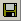

В нем надо создать новый узор или открыть существующий. После этого разблокируются пункты меню и кнопки на панели инструментов.
Нужно расставить на чертеже плитки так, как они будут выглядеть в узоре. Для каждой плитки нужно выполнить следующее:
1. Отметить на чертеже точку, в которую будет помещена плитка.
2. Открыть окно "Добавить плитку в узор".
3. Выбрать в этом окне плитку.
4. На появившемся в окне изображении плитки выбрать точку, которую программа совместит с точкой, отмеченной на шаге 1 (по умолчанию точкой привязки на плитке принимается базовая точка, с которой начинала рисоваться плитка).
5. В то же окне задать ориентацию плитки (поворот вокруг базовой точки относительно осей координат).
6. И в том же окне нажать кнопку "Добавить в узор".
Кнопка Обозначить место плитки

Если эта точка обозначает самую первую плитку узора, то она будет также базовой точкой узора и обозначаться дополнительной меткой - фиолетовым крестиком.
Кнопка Добавить плитку - открывается окно, в котором выбираем плитку, базовую точку и ориентацию плитки.

И на чертеже с узором, и на плитке точки задаются щелчком левой кнопки мыши. Эти точки отображаются синим крестиком. Координаты можно корректировать в окне с плиткой. Окно с плиткой можно закрывать и открывать - цифры запоминаются. Через правую кнопку мыши вызывается контекстное меню, в котором можно изменить размеры координатной сетки и масштаб отображения чертежа, а так же открыть мини-дисплей.
После добавления плитки в узор метка на чертеже
Чтобы программа смогла заполнить площадь, заданным узором, нужно указать базовые точки, где узор будет повторяться. Для этого надо в окне редактора узоров нажать кнопку

Пример, как в конечном итоге выглядит один из вариантов узора образованого прямоугольной плиткой:
В конце работы надо сохранить узор через меню или кнопку  на панели инструментов, которые открывают соответствующее окно.
После создания узора или нескольких узоров можно переходить непосредственно к разработке проектов укладки плитки.
Более подробно процесс составления узоров описан в главе Редактор узоров.